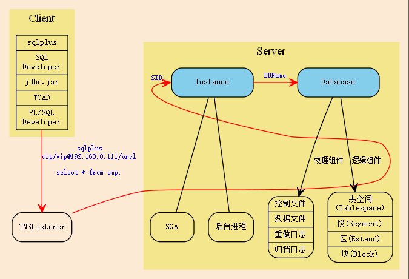
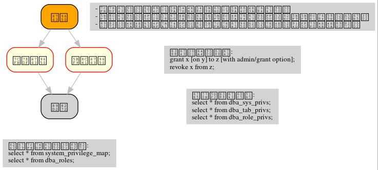
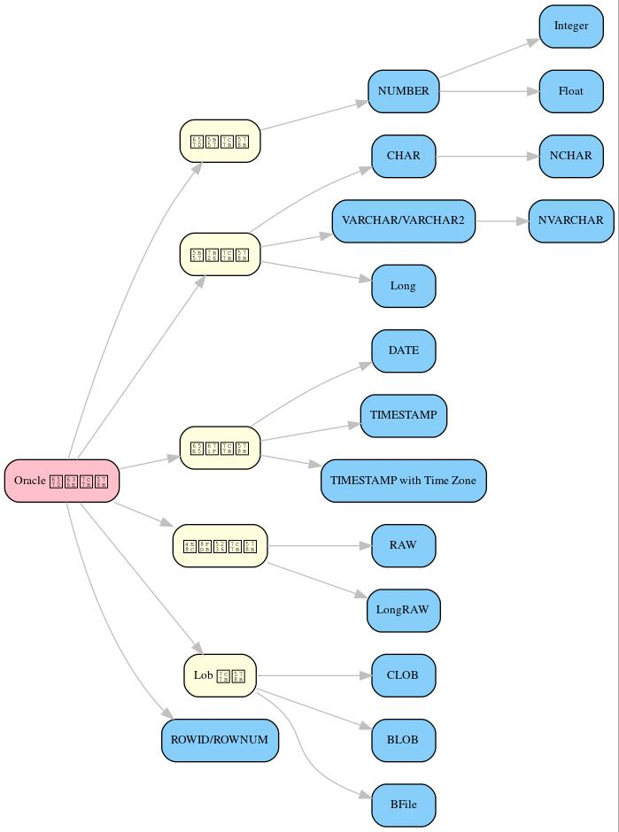

Oracle 数据库
数据库本质是用计算机存储数据的一种系统。
它是位于 用户 和 系统 之间的一种管理软件。
1 序
- 登录 SQLPLUS
cmd sqlplus [用户名]/[密码][@数据库] [参数] sqlplus sys/orcl as sysdba -- 登录 sys 用户，必须指定 sysdba 或 sysoper 身份 sqlplus system/orcl -- 数据库管理员
- 创建一个自己的用户(比如 vip/vip)
create user vip identified by vip; -- 注意，新创建的用户，什么权限都没有，需要授权后才能使用 grant create session to vip; -- 授予登录的权限 grant connect to vip; -- 角色是很多权限的打包，connect 是一种角色，它包含了连接查看数据的一些基本权限 grant dba to vip; -- dba 是绝大多数权限的集合，它基本能做所有事情，所以很少单独授予用户。但在测试环境中，这样，很爽。 -- 上面的创建用户、授予权限两步操作，可以简化为下面一步： grant dba to vip identified by vip; -- 注意，使用分号结尾
- 切换到用户
sqlplus vip/vip -- 在 cmd 下 conn vip/vip -- 在 sqlplus 中
- 使用
create table aaa (id int);
- 激活内置的测试账号，这里面有几张示例表，可以用它们练习下查询
alter user scott account unlock; conn scott/tiger
- 修改密码
alter user scott identified by [newpassword];
2 甜点
2.1 题库1
- 在芝加哥工作的人中，谁的工资最高
- 查询每个部门下有多少员工
- 查询除去 salesman 所有平均工资超过 1500 的部门
- 查询在 new york 工作的所有员工的姓名，部门名称和工资信息
- 查询姓名为 King 的员工的编号，名称跟部门
- 查询各种工作的最低工资
- 查询工龄大于10年的所有员工信息
- 查询每个部门员工数量，平均工资和平均工作年限
- 统计各部门每个工种的人数，平均工资。
- 查询从事同一种工作但不属于同一部门的员工信息。
- 查询所有员工工资都大于1000的部门的信息及员工信息
- 查询入职日期早于其直接上级的所有员工信息。
- 列出雇员中（除去mgr为空的人)工资第二高的人。
- 列出1981年来公司所有员工的总收入（包括sal和comm）
2.2 题库2
- 查询工资为 2500 到 4000 的人的数量（用不同方式查询）
select count(*) from emp where sal >= 2500 and sal <= 4000; -- vs. select count(*) from emp where sal between 2500 and 4000;
- 查询部门编号为 10 和 30 的所有人（用不同方式查询）
- 查询部门编号为 10 和 30 中名字中不含有 'C' 的所有人
- 查询部门编号为 10 和 30 中名字首字母之外不含有 'C' 的所有人
- 查询部门编号为 10 和 30 中所有的经理以及名字首字母之外不含有 'C' 的所有人
- 查询纽约和芝加哥地区所有的经理以及名字首字母之外不含有 'C' 的所有人
- 查询纽约和芝加哥地区所有的经理以及顶头上司名字的首字母之外不含有 'C' 的所有人
- 查询每个人的工资等级
-- 初始化数据 create table salgrade as select * from scott.salgrade; -- 分别查看数据 select * from emp; select * from salgrade; -- 杂交 select * from emp, salgrade; -- 过滤掉不合适的 select ename, grade from emp e, salgrade s where e.sal between s.losal and s.hisal;
- 查询每个部门的平均工资的等级
-- 分析题目 -- 1. 需要先查询出每个部门的平均工资 -- 2. 根据 salgrade 表中的数据，获取每个部门平均工资的等级 -- 这是所有的人 select * from emp; -- 按照部门分组 select deptno, avg(sal) from emp group by deptno; -- 结果： -- | DEPTNO | AVG(SAL) | -- | 30 | 1566.66667 | -- | 20 | 2258.33333 | -- | 10 | 2916.66667 | -- 跟 salgrade 表，杂交，总共 15 条结果 select * from (select deptno, avg(sal) sal from emp group by deptno) t, salgrade s; -- 过滤掉工资范围不合适的数据 select * from (select deptno, avg(sal) sal from emp group by deptno) t, salgrade s where t.sal between s.losal and s.hisal; -- 结果就是这样，就对了 -- | DEPTNO | SAL | GRADE | LOSAL | HISAL | -- | 10 | 2916.66667 | 4 | 2001 | 3000 | -- | 20 | 2258.33333 | 4 | 2001 | 3000 | -- | 30 | 1566.66667 | 3 | 1401 | 2000 | -- 需要将部门名称显示出来，再杂交->过滤一次就可以了 select * from (select deptno, avg(sal) sal from emp group by deptno) t, salgrade s, dept d where t.deptno = d.deptno and t.sal between s.losal and s.hisal; -- 最后的最后，设置显示字段 select dname, grade from (select deptno, avg(sal) sal from emp group by deptno) t, salgrade s, dept d where t.deptno = d.deptno and t.sal between s.losal and s.hisal; -- 最终结果，完美 --| DNAME | GRADE | --| ACCOUNTING | 4 | --| RESEARCH | 4 | --| SALES | 3 |
2.3 题库3
- 查询每个组最高工资的那些人
- 有下面一个表，写一条 sql 语句计算男女之差
gender number 男 46 女 10 - 给 emp 中的人加工资，请写出相关语句:
条件 加多少 1000元以下 50% 2000元以下 30% 3000元以下 20% 其他 5% - 给 emp 中的人加工资，如上。但
1981/5/1之后来的所有人，只加2%, 请写出语句。 - 计算你们从入学到现在过了多少个周末
- 计算你们从现在到毕业还有多少天，还有多少个周末
- 计算你们在学校的时间内，每天花费多少钱
2.4 查询各种工作中的最低工资
看到最低、最大、平均之类的题目，首先想到的是分组函数的使用。
也就是 group by, having。
select job, min(sal) from emp group by job;
2.5 在芝加哥工作的人中，谁的工资最高
[题目] 从 scott 用户的 emp/dept 表中，找到 “来自芝加哥最有钱的那个人” 。
首先，我们需要理清思路。
这里总共有两个条件：
- 这个人来自芝加哥
- 这个人是最有钱的，而且是芝加哥最有钱的
我们可以看出，第二个条件是依赖第一个条件的。
所以，分两步查询：
- 找出所有来自芝加哥的人
- 从这些人中，找到最有钱的那个。这一步，可以通过 max 函数或者 order by 方式实现。
下面是语句示例：
---- 第一步：找到来自芝加哥的所有人。下面两种写法等价： select e.* from emp e join dept d on (e.deptno=d.deptno) where d.loc='CHICAGO'; select e.* from emp e, dept d where d.deptno = e.deptno and d.loc='CHICAGO'; ---- 第二步，基于上面结果，筛选出最有钱的那个 -- 可以通过 max 函数 select e.* from emp e, dept d where e.deptno = d.deptno and d.loc='CHICAGO' and sal = (select max(sal) from emp e, dept d where e.deptno = d.deptno and d.loc='CHICAGO'); -- 可以通过 order by 方式 select ename from (select e.*, d.* from emp e, dept d where e.deptno = d.deptno and d.loc='CHICAGO' order by sal desc) where rownum = 1;
注意，实现的方式，不止上面的那些。但总体 思路 是一样的。
所以，思路永远是最重要的。
2.6 查询所有员工工资都大于1000的部门的信息及员工信息
最核心的问题： 查询出符合条件的部门编号。
2.6.1 第一种思路
- 查询出所有的部门编号
select * from emp;
- 查询出所有工资少于 1000 的人，
我们要把它所在的部门，从上面的结果中排除掉。
select deptno from emp where sal < 1000;
- 将上面查询出的不符合条件的部门排除掉
select distinct deptno from emp where deptno not in (select deptno from emp where sal < 1000);
- 修改上面语句，增加最终的条件，查询所有的其他信息
select d.dname, e.* from emp e join dept d on(e.deptno = d.deptno) where e.deptno not in (select deptno from emp where sal < 1000)
2.6.2 第二种思路
使用分组函数(group by / having)。
分组函数主要用来统计分析。
一个完整的查询语句如下，其中 group by 和 having 是用来分组和筛选分组。
select [字段] from [表名] where [条件] group by [分组字段] having [对分组结果进行筛选] order by [字段]
示例：
select deptno, -- 分组字段 count(*), -- 人数 sum(sal), -- 工资总和 avg(sal), -- 平均工资 max(sal), -- 最高工资 min(sal) -- 最低工资 from emp group by deptno -- 按照部门分组，进行统计 having avg(sal) > 2000; -- 只显示平均工资大于 2000 的分组
那我们的题目的解决思路就是：
- 按照部门分组
select deptno from emp group by deptno;
- 筛选，排除最低工资小于 1000 的部门。
即：得到符合条件的部门的编号。
select deptno from emp group by deptno having min(sal) > 1000;
- 完善最终语句，得到最终结果。
select * from emp e, dept d where e.deptno = d.deptno and e.deptno in (select deptno from emp group by deptno having min(sal) > 1000);
2.7 查询当月总共有多少个周五
首先，第一步，得到本月所有日期的结果集，两种方式:
- 使用已有表的 rownum 构建
- 使用 oracle 的 connect by level 语句（结构化查询）
得到有 n 条记录的虚表：
select rownum from dba_objects where rownum < 32; select level from dual connect by level < 32;
将虚表转化为我们需要的日期表：
select trunc(sysdate, 'MON') + rownum - 1 from dba_objects where rownum < 32; select trunc(sysdate, 'MON') + level - 1 from dual connect by level < 32;
其次，在上面结果集的基础上进行筛选：
-- 1. select * from (select trunc(sysdate, 'MON') + rownum - 1 d from dba_objects where rownum < 32) where to_char(d, 'day') = '星期五' and d <= last_day(sysdate); -- 2. select * from (select trunc(sysdate, 'MON') + level - 1 d from dual connect by level < 32) where to_char(d, 'day') = '星期五' and d <= last_day(sysdate);
当然，你也可以将 last_day 这一段放到里面：
select * from (select trunc(sysdate, 'MON') + level - 1 d from dual connect by level <= extract(day from last_day(sysdate))) where to_char(d, 'd') = 6;
3 冷饮
3.1 学生管理系统
根据我们学校的实际情况，请帮助设计一个学生管理系统。
比如, 学生，老师，班级，课程。按照你自己的设计，酌情增加。
基本步骤：
- 先用 e-r 图，将实体的关系表述出来。
这样的图能帮助我们理清思路，并能帮助团队间的有效交流。
一定在图画好之后再去着手数据库表的创建。要秉承先设计后实现的思路。
你可以用一些知名的工具(如 visio)去画，也可以手动在纸上画。
- 根据设计好的图，写出相应的建表语句。
- 也可以进一步根据实体关系和表，创建相应的 Java 实体类。进一步可以 DAO，进一步可以 Service【可选】
- 最后，将图跟语句一起上交。这个过程着重思考下项目从设计到编码是怎么一个过程。
需求分析 -> *概要设计* -> 详细实现。
3.2 博客管理系统
首先，设计一个博客表(blog), 至少有下面字段
- id
- author
- title
- content(要求是 clob 类型)
- image(要求是 blob 类型)
- create_time
用 Java 完成基本的 CRUD，并掌握使用 PL/SQL 操作 blob/clob 的技巧。
3.3 购物车逻辑的表设计(从设计E-R图开始)
3.4 微博/博客系统(从设计E-R图开始)
3.5 论坛(从设计E-R图开始)
4 体系结构
Oracle 采取的是 Client/Server 架构。

客户端(Client)操作数据库的请求发送后，服务端的监听器(TNSListener)接收到请求，并将其转发给相应的数据库实例(Instance)，再由实例(Instance)去操纵数据库(Database)。
返回操作结果，是一个相反的过程。下面是个简陋的图示:

4.1 Client
4.1.1 Sqlplus
这是一个轻量级的功能强大的客户端, 是 dba 必须掌握的工具。
用 sqlplus 连接数据库的语法为：
# Usage: # sqlplus 用户名/密码@主机名:端口号/实例名 # 参数个数不是固定的 sqlplus # 会要求你输入用户名密码，默认连接本地 ORACLE_SID 变量指定的数据库 sqlplus vip # 会要求你输入密码 sqlplus vip/vip # 连接本地 ORACLE_SID 变量指定的数据库 sqlplus sys/hello as sysdba # sys 用户必须用 sysdba 或 sysoper 的身份登录 sqlplus vip@192.168.0.111/orcl # 连接 192.168.0.111 机器上的 orcl 数据库，用户名为 vip sqlplus vip@192db # 连接 别名 为 192db 的数据库
我们可以配置 sqlplus 的一些行为，两个命令：
- show. 用来显示配置参数
- set. 用来设置配置参数
比如：
show all -- 显示所有配置参数 show lines -- 显示 lines 的配置信息 show errors -- 显示错误 set lines[ize] 333 -- 将行宽设置为 333 set pages[ize] 444 -- 将每页的记录数设置为 444 set echo off/on -- 导入外部文件，是否要显示原始 sql 语句 set feedback on/off -- 是否显示“查询到xx数据”等信息 set timing on/off -- 是否显示语句的执行时间 set autocommit on/off -- 是否启用自动提交 set autotrace on/off -- 是否输出执行计划 set serveroutput on/off-- 是否显示来自服务端的信息 column aaa format a22 -- 将列 'aaa' 的宽度限制为 22 个字幕'a'的大小。column 命令很强大，语句也复杂，此处不提。
在 sqlplus 中有缓冲区的概念:
缓冲区是用来记录上一次执行的命令语句的空间。
我们可以通过一些列简单命令，对上一次输入的语句进行一些控制:
- 增
append/insert - 删
delete - 改
change - 查
list - 执行修改后的语句
run或者/
例子：
list -- 显示完整的缓存区 list 3 -- 显示并定位到第三行 list 3 5 -- 显示第三行到第五行的内容 list last -- 定位到最后一行
list 3 del -- 删除第三行
list 3 append order by sal -- 定位到第三行，然后追加 order by sal insert order by sal -- 开启新的一行，插入 order by sal
list 3 change /emp/dept -- 定位到第三行，将这一行的 emp 换为 dept
还有其他一些命令：
get D:\aaa.sql -- 将文件加载到缓冲区，但不执行 start D:\aaa.sql -- 将文件加载到缓冲区，并且执行 @D:\aaa.sql -- 是上面一条语句的简写形式 save D:\bbb.sql -- 将缓冲区的内容保存到文件中 edit -- 调用外部编辑器，编辑缓冲区 clear screen -- 清空缓冲区
show user -- 显示当前用户 show parameters -- 显示 oracle 的配置参数 show parameters nls -- 显示 oracle 中所有跟语言配置相关的一些参数 describe emp -- 显示 emp 表的结构信息
4.1.2 JDBC
用 Java 连接数据库，需要用到 jdbc 驱动，它们可以在下面目录中找到：
主目录\product\12.1.0\dbhome_1\jdbc\lib\*.jar
比如 ojdbc7_g.jar, 7 表示适用于 JDK 版本 1.7, g 表示自带更多调试信息。
4.2 TNSListener
TNSListener，是用来监听来自客户端的请求，并将其转发给相对应的服务端实例的一种后台服务。
它是沟通客户端与服务端的一个桥梁。
比如，下面用 sqlplus 客户端将会连接 localhost 上的 orcl 数据库:
sqlplus vip/vip@localhost/orcl
请求会发送到 localhost 主机的 1521 号端口， 作为监听的 TNSListener 收到这个请求后，再把请求转发给对应的 orcl 数据库实例。
所以必须开启监听服务，并且配置正确，才能连接操作数据库。
注：如果用 sqlplus vip/vip 的方式连接数据库，即没有指定连接的机器，那么默认连接的是本机数据库 这种连接是不需要监听服务的，因为为了增加连接速度，这样的本地连接 oracle 会使用一个专用的进程直接连接实例
我们可以使用 Oracle 提供的 lsnrctl 命令操纵监听服务的开启或关闭：
lsnrctl status # 查看状态 lsnrctl stop # 停止监听服务 lsnrctl start # 开启监听服务 lsnrctl reload # 重启监听服务 lsnrctl services # 查看监听的连接情况
我们可以使用 Oracle 的 Net Manager 工具来配置自己的监听器。
实质上，用 Net Manager 配置跟直接修改下面文件的作用是一样的：
主目录\product\12.1.0\dbhome_1\network\admin\listener.ora
我们在 Net Manager 中对 listener 的配置对应的是这一段代码：
LISTENER =
(DESCRIPTION_LIST =
(DESCRIPTION =
(ADDRESS = (PROTOCOL = TCP)(HOST = 0.0.0.0)(PORT = 1521))
)
...
)
只要修改其中的 host/port 等，重启监听服务即可。
4.3 Server
Oracle 服务端分为两部分：
Instance实例Database数据库
4.3.1 实例(Instance)
实例, 又称为数据库引擎，由 SGA(System Global Area, 系统全局区) 和 一系列后台进程 组成。
它需要启动才会生成，用来加载并管理一个数据库。
服务启动的大致过程：
- [读取] 读取系统的 ORACLE_SID 环境变量，确定要启动的实例名字，比如为 xxoo
- [加载] 从
$ORABASE/admin/xxoo和$ORA_HOME/database/SPFILEXXOO.ora等位置加载相关配置文件。配置文件的名字是根据 sid 来定义的。 - [启动] 从配置文件中，读取相关信息，比如数据库名字、数据库控制文件位置、SGA 等信息，并根据这些，初始化数据库加载需要的
内存空间(SGA)和相关进程。 - [装载] 根据配置文件中读取的数据库信息，找到各种数据文件位置，并装载数据库。
- [启动] 进行数据校验等，如果没有问题，启动数据库。
可以通过查看启动过程协助理解：
-- 首先，登录 sys 用户，只有管理员才有完全操纵数据库的权力 -- shutdown 用来关闭。如果不带参数，默认为 normal ---- immediate 表示立即关闭，如果有未处理完操作，回滚并断开 ---- normal 表示等待所有连接断开才关闭数据库 ---- 其他参数，略 shutdown immediate; -- 启动数据库，分解为三个动作： ---- 启动实例 ---- 利用启动的实例去挂载数据库 ---- 校验并打开数据库 -- 只有完全打开，才能进行完全的数据操作 -- 也可以指定参数，启动到某个阶段。这是在维护数据库中使用的命令。 startup -- 如果不加参数， startup nomount -- 启动到 nomount 阶段 startup mount -- 启动到 mount 阶段 -- 当然，也可以这样分步启动： startup nomount alter database mount alter database open
4.3.2 数据库(Database)
数据库, 是保存在硬盘上的文件集合，它是数据的主要载体。
$OracleBase\oradata\[数据库名字]\
可以从不同的角度去认识数据库，比如物理/逻辑角度：
- 物理组件
数据库是保存在操作系统的一系列文件。
默认安装情况下，这些文件都在
$ORACLE_BASE/oradata文件夹下：oradata/ └── orcl [数据库的名字] ├── CONTROL01.CTL ├── CONTROL02.CTL ├── EXAMPLE01.DBF ├── REDO01.LOG ├── REDO02.LOG ├── REDO03.LOG ├── SYSAUX01.DBF ├── SYSTEM01.DBF ├── TEMP01.DBF ├── UNDOTBS01.DBF └── USERS01.DBF从文件角度分析，一个数据库包含下面几类（组件）：
- 控制文件(control file)。记录数据库的物理结构和其他信息，如数据库名称、各种文件位置等。多副本。
select * from v$controlfile;
- 数据文件(data file)。用来存储数据的文件，会自动扩张。数据以块为单位进行保存。
select name, status, enabled from v$datafile;
- 重做日志文件(redo log)。用来记录用户的所有操作，为了备份恢复。
一个数据库至少有两个日志组，每个日志组至少有一个成员，成员之间是镜像关系。
用户的操作会记录到 redo log 中，当一个组记录满了，会自动切换到下一个组。轮流循环。
-- 需要理解 Oracle 日志的思路: -- 它采取了【多个分组，轮流循环写入；每组多成员，互为镜像；保存更多信息，使用归档模式】的方式，保证了记录安全性。 -- 在生产环境中，需要日志调整到不同的磁盘中，这样，即使某个文件损坏，或某块磁盘损坏，都可以通过镜像的日志文件对数据进行恢复。 -- 查看 redo log 日志组 select * from v$log; select * from v$logfile; -- 增加/删除 日志组 alter database add logfile 'd:/sss.rlog' size 100m; alter database drop logfile 'd:/sss.rlog'; -- 清空日志组 alter database clear logfile group 1; alter database clear unarchived logfile group 1; -- 为日志组 增加/删除 成员 alter database add logfile member 'd:/ssss.log' to group 1; alter database drop logfile member 'd:/ssss.log'; -- 重命名文件 -- 首先，在文件夹管理器里，将文件改名，比如，改为 ssss.redolog -- 其次，重启数据库到 mount 状态，然后执行重命名命令 alter database rename file 'd:/ssss.log' to 'd:/ssss.redolog'; -- 日志组一般是在写满的时候自动切换。 -- 我们也可以手动切换 alter system switch logfile;
- 归档日志文件。是重做日志的补充（redo log 记录的记录是有限的），可以把写满的 redo log 进行备份。
-- Oracle 的归档模式默认是关闭的 -- 归档模式会占用大量空间 -- 但他们用更多的空间，保存更多的历史记录，保障更大的安全性 -- 查看状态 archive log list; -- 切换数据库到归档模式 alter database archivelog; -- 启动 archive log start; -- 查看状态 archive log list;
- 其他文件
- 控制文件(control file)。记录数据库的物理结构和其他信息，如数据库名称、各种文件位置等。多副本。
- 逻辑组件
https://docs.oracle.com/cd/B28359_01/server.111/b28318/physical.htm#CNCPT1082
从 Oracle 内部管理数据的角度，可以将 Oracle 分为4个组件：
- 表空间(tablespace)
- 最基本的逻辑结构，是 Oracle 中进行数据恢复的最小单位，容纳着表、索引等对象
- 数据库是由若干表空间组成的。一个表空间至少对应一个物理文件。
- 实际开发中，不建议使用默认表空间。请为自己的业务创建自己的表空间。
-- 内置的各种表空间 ---- system/sysaux 系统表空间/系统辅助表空间，用来保存系统字典表和其他信息，数据库创建完会自动生成 ---- users 用户表空间，创建新用户时，默认使用的表空间 ---- temp 临时表空间 ---- undo 回滚表空间 -- 查看表空间信息 select * from v$tablespace; -- 查看所有表空间跟文件对应关系 SELECT FILE_NAME, BLOCKS, TABLESPACE_NAME from dba_data_files; -- 创建表空间 create tablespace xxx datafile 'D:/sss.dbf' size 50m autoextend on next 50m maxsize 1024m; -- 创建临时表空间 create temporary tablespace yyy tempfile 'D:/ANOTHER_TMP.dbf' size 5m; -- 删除表空间 drop tablespace xxx;
- 段(Segment)
- 段是对象在数据库中占用的空间
- 包括索引段、数据段等
- 表空间被划分为若干区域，每个区域负责存放不同类型数据，这些区域这就是段
- 区(Extend)
- 由连续的数据块组成，由 Oracle 自动分配管理
- 会自动扩展大小
- 块(Block)
- 数据块是 Oracle 数据库最小的逻辑单元
- 它代表在读写操作的时候，每次处理的数据大小是多少
- 正常情况下，它是操作系统块的整数倍，默认是 8 KB
- 可以通过参数 db_block_size 控制
show parameters block;

- 表空间(tablespace)
5 用户权限
安装完 Oracle，缺省有两个用户：
SYS用户，又叫数据库系统管理员、特权用户，数据库中至高无上的存在。- 它是数据库的系统管理员，负责数据库的安装、维护、升级、备份、恢复、优化等操作。
- 在它之下，保存着数据库所有的系统字典。
- 不能用 normal 身份登录，必须用 SYSDBA/SYSOPER 身份登录。
SYSTEM用户，数据库管理员，它拥有 DBA 角色，主要负责对数据库中各种对象，各种资源的管理。SCOTT用户，一个示例用户，默认是锁定的，需要解锁使用。
新创建的用户，是不能做任何事情的（甚至不能登录）。 必须要为用户授予权限，才能做相应的事情。 可以说，用户是权限的容器。
权限分为两种：

5.1 用户(User)
用户是用于 资源管理 和 权限控制 的一个概念。
-- 创建用户的语法 CREATE USER name IDENTIFIED BY password -- 一个用户，至少拥有用户名和密码 [DEFAULT TABLESPACE users] -- 指定此用户下数据默认保存位置，如果不指定，默认为 Users 表空间 [TEMPORARY TABLESPACE temp] -- 指定临时表空间，默认为 temp 表空间 [QUOTA 100M/unlimited ON USERS] -- 在表空间上有多少空间的使用权力，默认为 0, unlimited 表示无上限 [ACCOUNT LOCK/UNLOCK] -- 账号的初始状态：锁定/未锁定，默认为未锁定 [PASSWORD EXPIRE] -- 账号的初始状态：强制要求重设密码，默认不强制 [PROFILE DEFAULT] -- 指定使用的资源文件，默认是 default ; -- 修改用户的语法 ALTER USER name [跟创建用户的参数是一样的]; -- 删除用户的语法 DROP USER name [cascade];
为了对用户行为有更精细的控制，需要使用 资源文件 (profile)。
资源文件是口令限制、资源限制的命名集合。
-- 增加资源文件的语法 CREATE PROFILE name LIMIT RESOURCE_参数 n/unlimited/default -- 控制的是资源的占用 PASSWORD_参数; -- 控制的是密码的使用 -- 修改资源文件的语法 ALTER PROFILE name ...; -- 删除资源文件的语法 DROP PROFILE name; -- 为用户指定资源文件 ALTER USER name PROFILE profile_name;
常用资源文件选项：
| 名字 | 类型 | 介绍 |
|---|---|---|
| SESSIONS_PER_USER | resource | 每个用户最多能创建的连接数 |
| CONNECT_TIME | resource | 每个连接最多能保持的时间(分钟) |
| IDLE_TIME | resource | 每个连接不操作多长时间自动断开(分钟) |
| CPU_PER_SESSION | resource | 每个连接最多能占用的 CPU 时间(百分之一秒) |
| LOGICAL_READS_PER_SESSION | resource | 每个连接最多能读取的数据块 |
| PRIVATE_SGA | resource | 最多占用的 SGA 大小 |
| PASSWORD_LIFE_TIME | password | 限制指定时间中必须重新修改密码(天) |
| PASSWORD_REUSE_TIME/MAX | password | 密码重用的限制 |
| FAILED_LOGIN_ATTEMPTS | password | 允许的密码输错次数 |
| PASSWORD_LOCK_TIME | password | 因输错密码锁定的天数(天) |
| PASSWORD_VERIFY_FUNCTION | password | 用于自定义密码验证 |
操作示例：
-- 所有的用户信息，保存在字典表 dba_users 里面 select * from dba_users where USERNAME='VIP'; -- 所有的资源文件信息，保存在 dba_profiles 里面 select * from dba_profiles where profile='DEFAULT'; -- 创建用户的最基本语句，需要用户名和密码 -- 其他属性采用的都是默认值 create user vip identified by vip; -- 再一个稍微复杂一点的创建语句 create user vip identified by vip default tablespace users temporary temporary temp quota unlimited on users password expire; -- 在实际环境中，一个良好的习惯是： -- 为我们新建的用户创建独立的表空间 create tablespace db_vip datafile 'd:/db_vip.dbf' size 50m; create user vip identified by vip default tablespace db_vip quota unlimited on db_vip password expire; -- 如果想对用户做一些限制 -- 需要为它创建相应的资源文件 create profile vip_profile limit failed_login_attempts 3 password_life_time unlimited sessions_per_user 2; -- 将资源文件分配给用户，也可以在创建用户的时候指定 alter user profile vip_profile;
5.2 权限(Privilege)
权限指的是执行特定命令或访问数据库对象的权利，分为系统权限和对象权限。
-- 授权 -- with admin option 可以允许获得权限的用户可以将这个权限继续授予别人 GRANT 权限 [ON 对象] TO 谁 [WITH ADMIN OPTION]; -- 撤销授权 REVOKE 权限 FROM 谁; -- 创建角色 CREATE ROLE 角色名;
操作示例：
-- 对象权限有 select/insert/update/delete/alter/execute 等 -- 系统中所有的系统权限和角色保存在相关字典表中: select * from system_privilege_map; -- 列出系统中所有的系统权限 select * from dba_role; -- 列出系统中所有的角色 -- 查看已授予的权限 select * from dba_sys_privs where grantee='VIP'; select * from dba_tab_privs where grantee='VIP'; select * from dba_role_privs where grantee='VIP'; --- 关于权限的管理 -- 新建用户先 create user vip identified by vip quota 1m on users; -- 新用户什么都干不了，甚至不能登录，如果想让它可以登录，给它一个相应权限： grant create session to vip; -- 现在可以登录 vip 了。但是不能创建表，需要我们给一个相应权限： grant create table to vip; -- 现在，可以创建表了 create table aaa (i int); insert into aaa values (888); commit; -- 上面创建用户、授权的语句可以缩写为： grant create session, create table to vip identified vip quota 1m on user; -- 自己创建的表，自己会有完全的操作权力，但如果想要看别的用户的表，需要授权： grant select on scott.emp to vip; -- 上面就有了查询的权限。但不能修改。如果要修改，需要相应权限。当然，如果想把对象上的所有权力一并授予，需要用到 All: grant all on scott.emp to vip; -- 通过下面语句，可以看到对象权限的授予情况： select * from dba_tab_privs where grantee='VIP';
角色是权限的命名集合，它可以简化授权。
-- 创建角色 create role myrole; -- 将权限赋予角色 grant create session, create table to myrole; grant create view to myrole; -- 甚至可以将另一个角色赋予我们的角色 grant resource to myrole; -- 使用角色 grant myrole to vip; grant myrole to vip with admin option; -- 删除角色 drop role myrole;
[Oracle 预定义角色] Oracle 自带了很多角色，常用的有：
- CONNECT，只包含了 create session 等权限，即登录系统的权限
select * from dba_sys_privs where grantee='CONNECT';
- RESOURCE，包含了若干 create xxx 权限，即创建对象、创建资源的权限
select * from dba_sys_privs where grantee=RESOURCE';
- DBA，包含了200多个系统权限，是用来进行系统管理的角色
grant connect, resource to A_Common_User; grant dba to A_Super_User;
[特殊的 PUBLIC 角色] 公用角色，默认是授予每个用户的。
grant connect to public; -- 这样，不需要进行任何其他操作，所有新建的用户就都拥有登录的功能了。
[最小权限原则] 我们开发的时候，为了方便，经常要做这样的操作：
grant dba to xxx identified by yyy; -- 创建一个用户 xxx，密码为 yyy，授予 dba 角色
但这权力太大，在正式环境中，这样的授权是非常不合适的。一般要遵守 最小权限原则, 也就是：
创建一个用户，授予能完成任务的尽量少的权限，多一个也不好。
比如，我们有客户需要查看 vip 用户下的 student 表，我们需要创建一个用户给他：
-- 第一步，为客户需求创建一个用户 create user guest identified by ***; -- 第二步，授予连接数据库的权限 grant connect to guest; -- 第三步，授予 vip.student 的 select 权限 grant select on vip.student to guest; -- 当然，上面可以再简化为以下。That's All. grant connect to guest identified by ***; grant select on vip.student to guest;
6 SQL 语句
6.1 Data Type

查看数据所占空间的两个函数：
-- 查看所占字节数 select length('你好，世界') from dual; -- 查看所占字符数，即多少个字母，多少个汉字 select lengthb('您好，美女') from dual; -- 比如 create table aaa (a varchar2(6)); insert into aaa values ('aaa'); insert into aaa values ('你好'); select a, length(a), lengthb(a) from aaa;
6.1.1 字符类型
- char，固定长度，默认1，最大2000，如果长度不够，用空格填充。
- varchar2 类型，变长字符串，最多4000字节长度。
- nvarchar2，跟上面比，增加了字符集的支持。
- long，用于存储大数据，最多 2G。不建议使用，已被 clob 类型替代。
-- 它的使用跟 SQL 的标准 varchar 基本类似， -- 但是，在 Oracle 中请使用 varchar2 而不是 varchar， -- varchar2 的效率更高，并且在兼容性上做的更好 -- 初始化的语句为： name varchar2(20) -- 其中 20 代表最大长度， 默认单位是字节。 -- 如果定义为： name varchar2(20 char)，表示最大保存20个字符长度的字符串。 create table aaa ( a varchar2(20), -- 最大是20个字节长度，默认单位字节 b varchar2(20 byte), -- 最大为20个字节长度，跟上面是一样的 c varchar2(20 char) -- 最大为20个字符长度 ); -- varchar2 最大能保存 4000 个字节 -- 如果是英文，则是 4000 个英文字母 -- 如果是中文，需要按照字符集判断： -- GBK 用两个字节表示一个汉字，所以 varchar2 最多表示 2000 个汉字 -- UTF-8 是变长字符集，用一个字节表示一个英文字母，用3个或4个字节表示一个汉字，所以，最多可以保持1333个汉字。 select length('你好') from dual; -- 2 select lengthb('你好') from dual; -- 4 -- char 类型是固定长度的，可能会占用更多空间。但是因为长度固定，块的分配管理比较块，效率很高。 -- varchar2 是变长的，会占用尽量少的空间。但是需要消耗更多资源为分配变长空间，效率略低。 -- 所以，用哪一种，酌情而定。 -- nchar/nvarchar2 是 char/varchar2 的字符集支持版本，对多字节字符有算法上的优化。 -- 感觉用的比较少。
6.1.2 数值类型
- number，占用 38 位，有自己的内部表示方式，可以表示天文数字。
- int/float，number 类型的子类型
-- number 类型的语法为 NUMBER [位数[,小数点数]] create table bbb ( a number, -- 一共 38 位，其他按照插入的值自动判断 b number(5), -- 一共5位 c number(5, 2), -- 一共5位，3位整数，2位小数 d number (*, 2) -- 保存两位小数，其他随意 e number (*, 0), -- 相当于 int f int ); -- 插入的时候，多余的小数会被切掉，但如果整数位超了，会报错 insert into bbb values (111.223, 111.223, 111.223, 111.223, 22); -- 一般情况下，作为表的主键，设为 int 类型就可以了
6.1.3 日期类型
- date，存储的年月日，时分秒
- timestamp，存储的更详细，包括时区，还有精确到小数点后6位的秒数等
- timestamp with time zone，可以设置时区
- sysdate/systimestamp 连个函数用来查询当前的日期
-- 显示当前时间 select sysdate from dual; select systimestamp from dual; -- 时间的显示格式，由 nls_date/time_format 等参数控制 show parameter nls -- 如果想格式化时间，可以有下面方法： -- 1. 更改注册表中变量 -- # set NLS_DATE_FORMAT='yyyy.mm.dd' -- 2. 更改当前会话中的格式 alter session set NLS_DATE_FORMAT='yyyy.mm.dd'; -- 3. 手动转型：to_char -------- yyyy 代表四位的年, rr 代表两位的年 -------- mm 代表两位的数字月, -------- dd 代表两位的数字日, -------- hh 代表12格式的小时, hh24 代表24格式的小时 -------- mi 代表分钟数 -------- ss 代表秒数 select to_char(sysdate, 'yyyy-mm-dd') from dual; -- date 比 timestamp 占用更少空间 -- timestamp 比 date 更精确 -- 没有优劣，使用哪一个，按照需求来 -- 插入时间，使用 to_date 转型。 -- 符合标准日期格式的字符串，可以隐式转型。 create table stu (name varchar2(20), birth date default sysdate); insert into stu values ('aaa', sysdate); -- 当前时间 insert into stu values ('bbb', '20100303'); -- 插入成功，char 自动转型为 date insert into stu values ('ccc', to_date('1999-01-11', 'yyyy-mm-dd'); -- 手动转型
6.1.4 二进制类型
- RAW
- LONG RAW
6.1.5 LOB 类型
Large Object，用来存储大数据。
Oracle 提供了 DBMS_LOG 包对 LOB 类型的数据进行处理。
也可以在 jdbc 中通过 getXLob() 的方式进行 lob 字段的处理。
- CLOB，charactor，存储大容量字符串
- BLOB，Binary，存储二进制文件，如小图片、小电影
- BFile/XMLType 等
create table article ( id int primary key, title varchar2(20) not null, content clob, createtime date default sysdate ); insert into article (id, title, content) values (1, 'Oracle 使用指南', '你好');
6.1.6 伪列(Pseudo Column)
- rowid
rowid 是 oracle 中的伪列。可以通过下面语句显示:
select d.rowid, d.* from dept d
它是唯一的，不可变的，固定长度的。
它是数据存储物理地址的一种映射。一共有18位，前6位表示对象id，后3位表示fno，后6位表示块编号，最后3位表示行编号。 所以，通过rowid可以最快速度地定位到数据所在的位置。
比如，如果某行数据的 rowid 是
AAAO0fAAFAAAAlmAAA, 那么可以根据它直接定位数据的物理地址：AAAO0f AAF AAAAlm AAA 对象号(6个字符) 文件号(3个字符) 块号(6个字符) 行号(3个字符) rowid 是 oracle 特有的。
不建议使用 rowid 作为表的主键。迁移的需求，有改变的风险。
- rownum
列出每一行数据的行数，从1开始，自然增长。
-- 基本用法 select rownum, d.* from dept; select rownum, d.* from dept d where rownum < 3; -- 显示前两条 select * from (select rownum rn, d.* from dept d) t where t.rn = 3; -- 只显示第三条 select * from (select * from emp order by sal desc) where rownum<=3; -- 显示 emp 表中工资前三位的雇员信息。
6.1.7 NULL
它是 Oracle 中非常特殊的一种类型。它表示不确定，表示没有值。并且它能转化成所有的类型。 向数据库中插入空字符串时，oracle 会把它自动转化为 null 类型。所以，在查询空字符的时候：
select * from n3 where s = '';
上面的语句是非法，不合适的。应该这样查：
select * from n3 where s is null; select * from n3 where s is not null;
创建表的时候，为了约束插入的数据不能为空，应该在字段的后面写上 not null 约束。
create table n5 (s varchar2(20) not null);
跟 null 做任何的运算，结果仍然是 null.
select null + '' from dual; -- null
6.2 运算符
6.2.1 算术运算符
加 / 减 / 乘 / 除
6.2.2 连接运算符
是用来连接字符串的。跟java中的 + 是一致的。
select 'abc' || ' bcd ' as 连接后的结果 from dual; select d.dname || ' 部门' from dept d;
6.2.3 比较运算符
> / < / >= / <= / != / <> /IS NULL / Like / Between / In / Exsist
-- 判断 null 值 select * from n5 where s is null; select * from n5 where s is not null; -- like 模糊查询。慎用，有可能会导致全表扫描，效率低。 -- % 匹配0到多个字符，_ 匹配一个字符 select username from dba_users where username like 'VI_'; select username from dba_users where username like 'SC%'; select username from dba_users where username like '%SC%'; -- in，是 where x = a or x = b or x = c 的一种缩写。下面两条是等价的。 select * from emp where empno in (700, 800, 900); select * from emp where empno = 700 or empno = 800 or empno = 900; -- in 后面跟的不一定是逗号分隔的单项，也可能是一个完整的查询语句。 -- 下面两条结果是一致的 -- 这种 in 慎用 select * from emp where deptno in (select deptno from dept where dname = 'SALES'); select a.* from emp a,dept d where a.deptno =d.deptno and d.dname='SALES'; -- between...and select * from emp where empno between 7800 and 9000; -- 等同于： select * from emp where empno >= 7800 and empno <= 9000;
6.2.4 逻辑运算符
and / or / not
not 的优先级 > and 的优先级 > or 的优先级
6.2.5 集合操作符
Union / UnionAll / Intersect / Minus
-- 生成测试数据 create table dept_01 as select * from dept where rownum < 6; create table dept_02 as select * from dept where rownum < 4; insert into dept_02 values (98, '小吃部', '斗门'); insert into dept_02 values (99, '外卖部', '香洲'); commit; select * from dept_01 union select * from dept_02; select * from dept_01 union all select * from dept_02; select * from dept_01 intersect select * from dept_02; select * from dept_01 minus select * from dpet_02;
6.3 Join Query
-- 初始化表 create table loc (id int primary key, name varchar2(20)); create table person (name varchar2(20), locid references loc); -- 初始化数据 insert into gp values (1, '和平', '万岁'); insert into gp values (2, '自由', '很好'); insert into gp values (3, '民主', '爱国'); insert into gp values (4, '敬业', '友善'); insert into loc values (11, '广东'); insert into loc values (22, '山东'); insert into loc values (33, '湖南'); insert into loc values (44, '江西'); insert into person values ('王新炜', 33); insert into person values ('吴英平', 33); insert into person values ('杜志海', 44); insert into person values ('范锐', 11); commit; select * from person; select * from loc; -- 查询就是一个逐步过滤的过程 -- 叉乘，内部杂交，虚拟表，16条数据 select * from person, loc; -- 过滤掉不符合条件的数据。即完成一次外连接。 -- 即：增一表，加一条件。 select * from person, loc where person.locid = loc.id; -- 其他条件，即在上面的基础上继续过滤 select * from person, loc where person.locid = loc.id and person.name like '王%'; -- 增加另一个表 create table gp (id int primary key, name varchar2(20), logo varchar2(10)); alter table person add (gpid int references gp); -- 修改每个人的 group -- update .. select * from gp; select * from loc; select * from person; update loc set name='中华人民共和国湖南省' where id=33; commit; select * from person p, loc l, gp g; -- 将不符合的排除掉 select * from person p, loc l, gp g where p.locid = l.id and p.gpid = g.id -- and l.name = '江西' and g.name='和平' and p.name like '王%'; -- -- oracle 写法，非标准 select * from person p, loc l, gp g where p.locid = l.id and p.gpid = g.id; -- ansi sql 写法，join 默认是 inner join select * from person p join loc l on p.locid = l.id join gp g on p.gpid = g.id; -- 增加一个没有地区的人 insert into person values ('黄秀', null, null); commit; -- 显示所有人，并将其地区信息查询出来。 -- 需要使用外连接，将即使不匹配的人也查询出来 -- oracle 写法 select * from person, loc where person.locid = loc.id(+); -- 标准写法 select * from person p left outer join loc l on p.locid = l.id;
6.4 Functions
6.4.1 Numeric
- abs/mod 绝对值/求模
- sqrt/power/exp 求幂
- ceil/floor/round 取整
- trunc 截取小数点
- sin/cos/ln/log 数学函数
6.4.2 Charactor
- chr/ascii ascii码
- length/lengthb 字符/字节长度
- initcap/upper/lower 字母大小写
- substr/translate/replace/instr 子串/替换
- ltrim/rtrim/lpad/rpad 修剪/填充
6.4.3 Datetime
select sysdate, systimestamp, current_date from dual; -- x 天之后的日期 select sysdate + 365 from dual; -- x 个月后的日期 select add_months(sysdate, -5) from dual; -- 相差几个月 select months_between(to_date('20180501'), sysdate) from dual; -- 下周 x 的日期 select next_day(sysdate, '星期一') from dual; select next_day(sysdate, 2) from dual; -- 1 代表星期天, 0 代表星期一, 类推 -- 一个月的最后一天/第一天 select last_day(sysdate) from dual; select trunc(sysdate,'MONTH') from dual; select trunc(sysdate,'YEAR') from dual; -- 获取日期的单个字段 select extract(day from sysdate) from dual; -- 对日期进行截取 select round(to_date('20170916'),'MONTH') from dual; -- 四舍五入 select trunc(to_date('20170916'),'MONTH') from dual;
6.4.4 Nullable
- nvl/nvl2/nullif
6.4.5 Miscellaneous
decode/case when:
-- 生成数据 create table sss (name varchar2(20), gender int); insert into sss values ('樱桃小丸子', 2); insert into sss values ('路飞', 1); insert into sss values ('大熊', 3); insert into sss values ('光头强', 1); commit; -- 查询，将 gender 的数字转化为男女 -- 1. decode 函数的方式 select name, decode(gender, 1, '雄性', 2, '雌性', '未知性别') "性别" from sss; -- 2. case when 的方式 select name, case gender when 1 then '雄性' when 2 then '雌性' else '未知性别' end "性别" from sss; -- 3. case when 的另一种方式 select name, case when gender <= 1 then '雄性' when gender >= 2 then '雌性' else '未知性别' end "性别" from sss; -- 给 emp 中的人加工资： ---- 1000 元以下的，加 50% ---- 2000 元以下的，加 30% ---- 3000 元以下的，加 20% ---- 其他人 5% create table emp3 as select * from emp; -- 如果要将所有的工资翻倍，这么写： update emp3 set sal = sal*2; -- 如果不同的人加不同的工资，需要用到 case when: update emp3 set sal = (case when sal <= 1000 then sal*1.5 when sal <= 2000 then sal*1.3 when sal <= 3000 then sal*1.2 else sal*1.05 end); -- 如果 1981/5/1 之前来公司的人按照上面调薪，其他人只调 1% 呢？ -- [TODO]
6.4.6 Aggregate Function
聚合函数是用来统计每个分组的统计信息，它们要跟 group by 一起使用，用来将每个分组所有数据 聚合 成一条统计数据。
包括 max/min/count/avg/sum 等。
-- 按照部门进行分组统计的语句 select deptno, -- 因为按照 deptno 分组，select 中只能有 deptno 字段 count(*), -- 每个分组多少条数据 max(sal), -- 每个分组工资的最大值 min(sal), -- 每个分组工资的最小值 avg(sal), -- 每个分组工资的均值 sum(nvl(comm, 0)) -- 每个分组奖金总和，因为奖金可能为 null，所以需要使用 nvl 进行去空 from emp group by deptno; -- 分组依据 -- 可以用 having 对结果进行过滤 -- 整个 select 语句执行顺序大致是: where -> group by -> having -> order by select deptno, count(*), max(sal), min(sal), avg(sal), sum(comm) from emp group by deptno having avg(sal) > 2000; -- having 等价于嵌套的 where，即上面语句跟下面这条等效。 select * from ( select deptno, count(*), max(sal), min(sal), avg(sal) asal, sum(comm) from emp group by deptno ) where asal > 2000;
6.4.7 Analytic Function
https://docs.oracle.com/cd/E11882_01/server.112/e41084/functions004.htm#SQLRF06174
聚合函数统计的是一个分组的信息，聚合之后每个分组只能得到一条信息，但并不能够获取分组内成员的具体信息。
而分析函数可以详细显示分组内部的统计信息，它显示的信息更全面，语法也更复杂。
大致来说，分析函数的使用语法是这样的:
分析函数() over ([partition by xxx] order by yyy [rows/range ...])
解释：
- 一个分析函数，需要跟着一个窗口函数。
- 以 over 开始的部分叫 窗口函数, 它描述了要对哪些数据、按照什么方式进行分析的行为。
- 窗口函数内部分为三部分，其中 order by 是必须的，其它可选
partition by指定了数据按照什么方式 分组/分区order by指定了在分区之内，数据的排序方式rows/range可以对分区的数据进行限定- 分析函数有很多，比如 row_number/rank/dense_rank/max/count 等，row_number 等有如下区别
ROW_NUMBER 返回连续的排位，不论值是否相等 RANK 具有相等值的行排位相同，序数随后跳跃 DENSE_RANK 具有相等值的行排位相同，序号是连续的
- 需要查询组本身的信息，用聚合函数 group by; 需要查询组成员的统计信息，需要用分析函数。
示例：
-- 最基本，窗口描述内只有 order by select e.*, sum(sal) over (order by sal) from emp e; select e.*, row_number() over (order by sal) from emp e; -- 以组为单位，进行排序 select e.*, sum(sal) over (partition by deptno order by sal) from emp e; select e.*, row_number() over (partition by deptno order by sal) from emp e; -- 比如，要查询每个组的最高工资，可以用聚合函数 select deptno, max(sal) from emp group by deptno; -- 但如果要查看工资最高的那个人，聚合函数无能为力，需要用到分析函数 ---- 1. 首先按组排序 select e.*, row_number() over (partition by deptno order by sal desc) from emp e; ---- 2. 过滤，只取排名第一的那个人，ok select * from (select e.*, row_number() over (partition by deptno order by sal desc) rn from emp e) where rn = 1;
6.5 Pagination
使用 rownum 或者 row_number()：
-- 注意，这种写法是无效的，因为：rownum > n 这种写法无意义 select * from emp where rownum > 4 and rownum < 8; -- 为了能使用 rownum>n，我们只需要嵌套一层查询即可 select * from (select rownum rn, e.* from emp e) where rn > 4 and rn < 8; -- 同样，使用 row_number() 分析函数，我们也需要嵌套一层 select * from (select row_number() over(order by rowid) rn, e.* from emp e) where rn > 4 and rn < 8; -- 而下面这种写法，基本上是最合理，最高效的： select * from ( select a.*, rownum rn from ( select * from emp ) a where rownum < 8) where rn > 4; -- 即: SELECT * FROM ( SELECT a.*, ROWNUM rn FROM ( -- 要查询的语句 ) a where ROWNUM < '#最大序号#') WHERE rn > '#最小序号#';
6.6 查询语句执行顺序
完整的查询语句类似是这样的：
select ..., ROWNUM from table where <where clause> group by <columns> having <having clause> order by <columns>;
它的处理顺序是：
- 首先，执行 FROM/WHERE 语句
- 为结果赋予 ROWNUM 并同时根据 FROM/WHERE 语句进行 rownum 过滤
- 执行 SELECT
- 执行 GROUP BY
- 执行 HAVING
- 执行 ORDER BY
PS: 如果存在分析函数(row_number etc)，那么，分析函数的执行会在 order by 之前。
6.7 DDL/DML/TCL/DCL
表的约束:
- 是加在表上的一种对象，能保证每次插入或修改数据的时候，对数据的合法性进行检查，从而避免插入不合理数据。
- 优点：通过检查，能保证数据的完整性和一致性。
- 缺点：消耗一定的存储，数据量大的时候，每次检查会有一定的资源损耗
-- 首先，创建表：类型、长度、非空 create table ddl_test1 ( id int, name varchar2(20) not null, birthday date, sex int ); -- 在表 ddl_test1 上增加一个名字为 fk_ddl_sex_01 的约束 -- 作用在 sex 列上 / 关联到 ddl_sex 表的 id 列 alter table ddl_test1 add constraint fk_ddl_sex_01 foreign key (sex) references ddl_sex (id); create table ddl_sex ( id int, value varchar2(10) ); alter table ddl_sex add constraint pk_ddl_sex primary key(id); select * from ddl_sex; ---- 创建约束的几种方式 ---- 第一种方式，先创建表，再初始化数据，最后再加约束 -- 创建表 create table ddl_test2 ( id int, name varchar2(20) not null, birthday date, sex int ); create table ddl_sex2 ( id int, value varchar2(10) ); -- 插入数据 insert into ddl_sex values (1, '男'); insert into ddl_sex values (2, '女'); insert into ddl_test2 values (2, 'xx', sysdate, 1); insert into ddl_sex values (3, '不知'); insert into ddl_test2 values (1, 'xx', sysdate, 1); insert into ddl_test2 values (3, 'xx', sysdate, 1); insert into ddl_test2 values (4, 'xx', sysdate, 1); -- 增加约束 alter table ddl_test2 add constraint fk_0023 foreign key (sex) references ddl_sex; alter table ddl_test2 add constraint pk_test2 primary key (id); ---- 第二种方式，在建表的字段上直接建立约束 create table ddl_test4 ( id int primary key, name varchar2(20) not null, sex constraint hello250 references ddl_sex ); ---- 第三种方式，将建立约束的语句，放到建表语句最后。优点，清晰易于管理。 create table ddl_test5 ( id int, name varchar2(20) not null, sex int, constraint hello260 primary key(id), foreign key (sex) references ddl_sex ); ---- 约束的种类 ---- 主要有：主键约束、非空约束、唯一约束、检查约束、外键约束等 create table ddl_test6 ( id int, sal number(5) ); alter table ddl_test6 add constraint pk_test6 primary key (id); alter table ddl_test6 add constraint ck_2323 check(sal > 1250); insert into ddl_test6 values (1, 500); insert into ddl_test6 values (2, 3500); select * from ddl_test6;
表的命名:
- 简
- 明
另外：
- 表名等在数据库内部会自动转化为大写的形式。如果想使用小写的形式，需要在创建的时候，加双引号。
create table "lowcase_name" (...);
- 表名尽量使用英文单词，或英文单词缩写词。如果有多个单词连接，请使用下划线。
- 不要使用复数形式。比如使用
boy而不是boys, 使用student而非students. - 字段名字有两种方式:
-- 清晰明了不拖泥带水，但多表联合查询，可能出现重复字段 create table boy (id int, name varchar2(20), wechat varchar2(20)); -- 写法丑，但联合查询不会出现重复字段 create table girl (girl_id int, girl_name varchar2(20), girl_wechat varchar2(20));
- 主键请使用 代理主键, 即没有任何业务关联的字段作为主键。因为直觉上不变的东西，在特定情况下都可能发生变化。
- 自增，请使用 序列, 最好为每个单独的主键创建一个专用的序列。
-- 首先，保证有创建序列的权限 GRANT CREATE SEQUENCE TO VIP; -- 创建序列的最简语句 -- 注意，命名中，最好带 seq 等字段，表示这是一个序列 CREATE SEQUENCE seq_boy; -- 使用的方式很简单 insert into boy values (seq_boy.nextval, 'xxx'); select seq_boy.currval -- 序列当前值 seq_boy.nextval -- 序列下一个值 from dual; -- 序列可以有更多参数 create sequence seq_boy2 minvalue 2 -- 最小值，默认 1 maxvalue 1000 -- 最大值，默认无限 start with 4 -- 初始值，默认跟 minvalue 相同 increment by 2 -- 步进 nocycle -- 如果到达最大值，是否从开始再次循环 nocache -- 设置缓存 ; -- 修改 alter sequence seq_boy2 cache 10; alter sequence seq_boy2 maxvalue 2000 increment by 5; -- 删除 drop sequence seq_boy2;
修改, ALTER:
-- 创建示例表 create table ddl_test1 ( id int primary key, name varchar(2) not null, birth date default sysdate ); -- 各种修改 alter table ddl_test1 rename column id to testid; alter table ddl_test1 modify (name varchar2(40), birth timestamp); alter table ddl_test1 add gender varchar2(10) not null; alter table ddl_test1 drop column gender; -- 作用在序列上的 DDL create sequence seq_aaa; alter sequence seq_aaa start with 222; drop sequence seq_bbb;
查询, select:
-- SELECT 语句中的基本计算，是基于行的 -- 不同行中的数据，不能直接计算 -- 所以，解决的方案是：将不同行的数据整合到同一行中，再做比较 -- 而整合到同一行，有很多方法： -- 可以是表跟表进行关联；可以是分组；等等。 -- 关键是：思路，思路，思路。 -- 下面是一个例子 -- 查询男、女之差 -- 首先，初始化数据 -- 男 / 46人 -- 女 / 10人 create table aaa (gender char(2), num number); insert into aaa values ('男', 46); insert into aaa values ('女', 10); -- 1. 这是一种方法， with a as (select * from aaa where gender = '男'), b as (select * from aaa where gender = '女') select a.num - b.num from a, b; -- 2. 下面是上面方式的等价写法 select a.num - b.num from (select * from aaa where gender = '男') a, (select * from aaa where gender = '女') b; -- 3. 下面是另一种写法 select (select num from aaa where gender = '男') - num from aaa where gender = '女'; -- 4. 最基本的，对表进行关联查询，之后再过滤，再计算 select a.num - b.num from aaa a, aaa b where a.gender='男' and b.gender='女'; -- 5. 或者基于分组 select max(num) - min(num) from aaa; -- 6.7.8. 其他方法...
7 同义词/视图
这两种都用来：
- 精简语句
- 隐藏细节
7.1 同义词(Synonym)
为 表或对象 创建别名：
- 可以简化 sql 语句
- 可以隐藏细节
- 提供公共访问（公有同义词）
-- 查看跟同义词有关的权限 -- 分两种： --- synonym, 创建来自己使用 --- public synonym, 创建来所有人都可以使用 select * from system_privilege_map where name like upper('%syn%'); -- 将创建同义词的权限授权给用户 grant create synonym to vip; grant create public synonym to vip; -- 创建 create synonym e for scott.emp; create or replace public synonym d for scott.dept; -- 可以为表之外的对象创建同义词 create sequence seq_aaaaaaforme; create synonym seq_aaa for seq_aaaaaaforme; -- 使用，在一切可以使用原先对象的地方 select * from e join d using (deptno); desc d; select seq_aaa.nextval from dual; -- 删除 drop synonym d; drop public synonym d;
7.2 视图(View)
视图, 默认指的是关系视图, 又叫虚表。
- 不占用数据空间
- 可以简化语句
- 可以隐藏细节
- 可以提升安全
除了关系视图，广义的视图包括：
- 关系视图(狭义的视图，虚表)
- 内嵌视图(子查询中的临时结果)
- 对象视图(面向对象)
- 物化视图(以空间换时间)
-- 查询跟视图相关的权限 select * from system_privilege_map where name like '%VIEW%'; -- 确保用户有足够权限 grant create view to vip; grant all on scott.emp to vip; grant all on scott.dept to vip; -- 创建视图 create view vemp as select * from scott.emp; -- 最简形式，为单个表创建视图 create view v_emp_vip as select * from scott.emp where sal >= 2000; -- 可以为表的部分数据创建视图 create view vvevip as select * from vevip; -- 可以为视图查询创建视图 create or replace view vevip as -- 可以为多表联合查询的结果集创建视图。 select e.*, d.dname, d.loc from emp e, dept d where e.deptno = d.deptno(+) and e.sal >= 2000; -- 使用 select * from e; select * from vemp; select * from v_emp_vip; select * from vevip; select * from vvevip; -- 删除 drop view vemp; -- force 强迫！！！不管 select 语句是否有错，都要创建。 -- or replace, 如果视图已存在，覆盖 -- with read only, 创建只读视图 create or replace force view vaaa as select * from wohaoshuai with read only; -- with check option, 防止更新后的数据, 超出视图的范围 insert into emp (empno, ename, sal) values (9988, '张思', 3333); create or replace view vbbb as select * from emp where sal > 3332; select * from vbbb; -- 两条数据，King 和 张思 update vbbb set sal = 2000 where empno = 9988; select * from vbbb; -- 只剩一条数据。 -- 按照道理，update 只是更新数据，不应该导致结果集变少。所以，需要通过 with check option 来限制不合理的修改 create or replace view vcc as select * from emp where sal > 1500 with check option; update vbbb set sal = 1000 where empno = 9988; -- 会报错
8 效率和速度
8.1 表分区
分而治之
目的：
- 安全（鸡蛋不要放在一个篮子里）
- 效率****（快速找到南方it学院所有姓张的人）
- 便于维护
场景：
- 数据量极大（大于 2G）
- 历史数据比重比较大
分类：
- 范围分区
- 列表分区
- 哈希分区(hash)
在以上分区的基础上，可以两两结合，形成 复合分区，但常用的就是两种：
- 范围-列表分区
- 范围-哈希分区
范围分区:
-- 创建一个普通表的语句 create table person1 (id int primary key, name varchar2(20), birth date); -- 数据将会在同一个表空间同一个段内 insert into person1 values (1, 'sss', sysdate); -- 创建一个分区表 -- 这里是按照生日进行范围分区 -- 语句的基本格式就是在普通建表的语句上，增加 partition by 语句块 create table person2 (name varchar2(20), birth date) partition by range (birth) ( partition p1 values less than (to_date('19950101','yyyymmdd')), -- 'values less than' partition p2 values less than (to_date('20000101','yyyymmdd')), partition p3 values less than (maxvalue) -- 默认分区 ); -- 插入，数据会根据分区的情况进入不同的分区内 insert into person2 values ('张三', to_date('19940707')); insert into person2 values ('李四', to_date('19980707')); insert into person2 values ('王五', to_date('20040707')); -- 查询表中所有数据 select * from person2; -- 查询特定分区上数据 select * from person2 partition (p3); -- 可以为不同的分区指定不同的表空间 -- 没有指定表空间的分区，使用用户的默认表空间 -- 所以，一个表内的数据可以存在于不同表空间里，也就是可以存放在不同数据文件中，不同磁盘上 -- 因此，分区表能增强数据的安全性 create table person3 (name varchar2(20), birth date) partition by range (birth) ( partition p1 values less than (to_date('19950101','yyyymmdd')) tablespace system, partition p2 values less than (to_date('20000101','yyyymmdd')) tablespace sysaux, partition p3 values less than (maxvalue) tablespace users ); -- 可以在其他类型上进行范围分区 -- 也可以在多个字段上进行范围分区 create table person4 (name varchar2(20), birth date, score number) partition by range (birth, score) ( partition p1 values less than (to_date('19900101','yyyymmdd'), 60), partition p2 values less than (to_date('19900101','yyyymmdd'), 90), partition p3 values less than (to_date('19990101','yyyymmdd'), 60), partition p4 values less than (to_date('19990101','yyyymmdd'), 90), partition p5 values less than (maxvalue, maxvalue) );
列表分区:
-- 如果是生日的这样的字段，数据是连续的，应该使用范围分区 create table person (name varchar2(20), birth date) partition by range(birth) ( partition p1 values less than (to_date('19900101', 'yyyymmdd')) tablespace users, partition p2 values less than (maxvalue) ); insert into person values ('aaa', to_date('19871212', 'yyyymmdd')); select * from person partition (p1); /* where birth between 1987 and 1990 where sex in ('男', '女') */ -- 但是像性别、民族等字段，更适合使用的是列表分区 -- 下面一个例子，使用性别作为分区字段，男的一个区，女的一个区 create table person2 (name varchar2(20), sex varchar(10)) partition by list (sex) ( partition p1 values ('男'), partition p2 values ('女') ); insert into person2 values ('aaa', '男'); insert into person2 values ('bbb', '女'); insert into person2 values ('ccc', '未知'); -- 报错 select * from person2 partition (p2); -- 默认分区的写法 create table person3 (name varchar2(20), sex varchar(10)) partition by list (sex) ( partition p1 values ('男'), partition p2 values ('女'), partition p3 values (default) ); insert into person3 values ('ccc', '未知'); select * from person3 partition (p3); -- 可以为每个分区指定表空间 create table person3 (name varchar2(20), sex varchar(10)) partition by list (sex) ( partition p1 values ('男') tablespace users, partition p2 values ('女') tablespace system, partition p3 values (default) );
哈希分区:
-- 哈希分区 -- 主要用在一些比较离散，不好分类的数据上，比如产品名字 -- 让 oracle 使用哈希算法自动计算数据的分区 -- 创建语句，非常简单 create table person4 (name varchar2(20), sex varchar2(10)) partition by hash (name) ( partition p1, partition p2 tablespace users ); insert into person4 values ('aaa', '男'); insert into person4 values ('收款', '男'); select * from person4 partition (p1); -- 上面的语句可以进一步简化为： create table person5 (name varchar2(20), sex varchar2(10)) partition by hash (name) partitions 5; -- 为每个分区指定表空间 create table person6 (name varchar2(20), sex varchar2(10)) partition by hash (name) partitions 3 store in (users, system, sysaux);
范围-列表分区:
-- 首先，按照生日进行列表分区，分了三个区 -- 其次，在每个分区内，又按照性别分了三个区 -- 所以，总共是 3 个分区 9 个子分区 create table person8 (name varchar2(20), sex varchar2(10), birth date) partition by range(birth) subpartition by list(sex) subpartition template ( subpartition sp01 values ('男'), subpartition sp02 values ('女'), subpartition sp03 values (default) ) ( partition p1 values less than (to_date('19900101', 'yyyymmdd')), partition p2 values less than (to_date('20000101', 'yyyymmdd')), partition p3 values less than (maxvalue) ); insert into person8 values ('aaa', '男', to_date('19900202')); -- 查询这条数据，有以下三种方式： select * from person8; select * from person8 partition (p1); select * from person8 subpartition (p1_sp01);
范围-哈希分区:
-- 先按照生日，将数据分为三个区 -- 然后在每个分区内，又按照哈希算法分成了三个区 -- 这样就保证了每个分区内的数据尽量的少，而且分区进行平衡 create table person7 (name varchar2(20), birth date) partition by range (birth) subpartition by hash (name) subpartitions 3 ( partition p1 values less than (to_date('19900101', 'yyyymmdd')), partition p2 values less than (to_date('20000101', 'yyyymmdd')), partition p3 values less than (maxvalue) );
相关字典表:
select * from user_objects where object_name ='PERSON8'; select * from user_tables where table_name = 'PERSON8'; select * from user_tab_partitions where table_name = 'PERSON8'; select * from user_tab_subpartitions where table_name = 'PERSON8';
操作表分区:
-- 添加分区 alter table person add partition p9 values less than (MAXVALUE); alter table person add partition p9 values (1, 2); -- 针对 list 分区 alter table person add partition; -- 针对 hash 分区 -- 删除分区 alter table person drop partition p3; -- 删除分区内数据 alter table person truncate partition p3; -- 合并相邻分区 alter table person merge partitions p2, p3 into partition p8; -- 拆分分区 alter table person split partition p2 at (3000) into (partition p3, partition p14); -- 范围分区的拆分 alter table person split partition p2 values (1,2) into (partition p3, partition p4); -- 列表分区的拆分 alter table person split partition p2 into (partition p3 values (1, 2), partition p4 values (3), partition p5); -- 列表分区的拆分 -- 重命名分区 alter table person rename partition p2 to p12;
8.2 物化视图
以空间换时间
物化视图，可以看做是 加了同步功能的临时表，它占用实际的存储空间。
创建的物化视图，可以在 user_tables 字典表里查到，因为本质上它就是一张表。
如果要创建这样的临时表，需要考虑几个方面：
- 什么时候初始化数据
build immediate -- 建表的时候顺带初始化数据，默认 build deferred -- 数据延迟创建
- 如果基表中的数据发生变化的时候，以什么样的策略保持同步
refresh complete -- 全量刷新，即将旧的完全删掉，再重建 refresh fast -- 增量刷新 refresh force -- 由 Oracle 自动判断刷新方式，默认 refresh never -- 不同步数据
- 如果基表中的数据发生变化，数据同步的时机
on commit -- 基本的事务提交立刻同步到物化视图 on demand start with 开始时间 next 下一个时间 -- 定时同步
- 如果查询基表中的数据，而这些数据同时包含在物化视图中，那么，是不是让 Oracle 将查询语句更改为查询物化视图
enable query rewrite disable query rewrite -- 默认
创建物化视图的示例：
-- 创建一个简单的物化视图的例子 create materialized view mv_emp1 build immediate -- 创建物化视图的时候，立刻初始化数据 refresh complete -- 采取全量同步的方式 on commit -- 基表中数据提交会触发同步行为 -- on demand sysdate next sysdate + 1 -- 每天更新一次 enable query rewrite as select * from emp where sal > 3000; -- 查询 select * from mv_emp1; -- 向基表中插入数据 insert into emp (empno, ename, sal) values (8377, '王武', 4444); -- 事务的提交才会触发同步，所以这一步不可少 commit; -- 查询，看数据是否已经同步 select * from mv_emp1; -- 如果要增量同步，需要记录在上次更新到下次更新时间内，基表内所有变化 -- 在这里，使用的是物化视图日志 -- 创建语句如下: create materialized view log on emp [with rowid/primary key]; -- 然后就可以指定增量同步的方式了 create materialized view mv_emp2 build immediate refresh fast -- 采取增量同步的方式 on demand sysdate next sysdate + 1 -- 每天更新一次，on demand 后面还有其他很多不同形式的命令 enable query rewrite as select * from emp where sal > 3000; -- 删除 drop materialized view log on emp; drop materialized view mv_emp2;
8.3 索引
位图索引示例：
| 字段 | 字段 | 索引 | 索引 | 索引 | 索引 | 索引 | 查询(xb=女 and hy=否) | ||
|---|---|---|---|---|---|---|---|---|---|
| XB | HY | xb=男 | xb=女 | xb=未知 | hy=是 | hy=否 | 将两个索引做与运算 | ||
| 男 | 是 | 1 | 0 | 0 | 1 | 0 | 0 | ||
| 女 | 是 | 0 | 1 | 0 | 1 | 0 | 0 | ||
| 女 | 否 | 0 | 1 | 0 | 0 | 1 | 1(符合条件) | ||
| 男 | 是 | 1 | 0 | 0 | 1 | 0 | 0 | ||
| 100亿 | 100亿 | - | - | - | - | - | - | ||
| 未知 | 否 | 0 | 0 | 1 | 0 | 1 | 0 | ||
| 女 | 是 | 0 | 1 | 0 | 1 | 0 | 0 |
9 PL/SQL编程
9.1 PL/SQL块
-- 完整语句 [DECLARE] -- 变量声明区 BEGIN -- 代码区 [EXCEPTION] -- 异常处理区 END; -- 最基本 begin dbms_output.put_line('hello, world'); end; -- 顺序执行 begin dbms_output.put('hello, '); dbms_output.put_line('world'); end; -- 用 declare 声明变量 -- 变量必须要跟着类型 declare name varchar2(20); age number; begin -- 变量赋值 name := 'Tom'; age := 12; dbms_output.put_line('您好，' || name); dbms_output.put_line('您是 ' || name || ', 你现在 ' || age || ' 岁。'); end; -- 可以带异常处理 declare name varchar2(20); age number; result number; begin name := 'Tom'; age := 12; result := 10/0; dbms_output.put_line('您好，' || name); dbms_output.put_line('您是 ' || name || ', 你现在 ' || age || ' 岁。'); exception when others then dbms_output.put_line(name || ', 你算错了，除数不能为 0'); end; -- 将异常信息保存到表中 create table mylog (msg varchar2(100), createdate date default sysdate); select * from mylog; declare name varchar2(20); age number; result number; errmsg varchar2(40); begin name := 'Tom'; age := 12; result := 10/0; dbms_output.put_line('您好，' || name); dbms_output.put_line('您是 ' || name || ', 你现在 ' || age || ' 岁。'); exception when zero_divide then errmsg := sqlerrm; dbms_output.put_line(name || ', 你算错了，除数不能为 0'); insert into mylog (msg) values ('TOM:' || errmsg); commit; end; -- 可以给变量赋予默认值，:= 或 default -- 可以通过 constant 设定常量，即不可更改的量 -- 异常处理区，可以处理多个异常 declare name CONSTANT varchar2(20) := 'CAT'; age number default 15; begin dbms_output.put_line('您好，' || name); dbms_output.put_line('您是 ' || name || ', 你现在 ' || age || ' 岁。'); exception when zero_divide then dbms_output.put_line('aaaaa'); when others then dbms_output.put_line('bbbbbbb'); end; -- 单独为某一段代码处理异常 DECLARE vemp emp%rowtype; BEGIN BEGIN select * into vemp from emp where ename = 'KINGs'; EXCEPTION WHEN no_data_found THEN dbms_output.put_line('ccc'); END; dbms_output.put_line('bbb'); EXCEPTION WHEN no_data_found THEN dbms_output.put_line('aaa'); END;
9.2 类型与赋值
DECLARE -- Scalar 类型 a number; b varchar2(20); -- 4000 c date; d clob; -- 属性类型 vempno emp.empno%type; vsal emp.sal%type default 111; BEGIN dbms_output.put_line('1: ' || vsal); -- 第一种赋值方式 vsal := 222; dbms_output.put_line('2: ' || vsal); -- 第二种赋值方式 select sal into vsal from emp where ename = 'KING'; dbms_output.put_line('3: ' || vsal); -- 第三种赋值方式 update emp set sal = 444 where ename = 'KING' returning sal + nvl(comm, 0), empno into vsal, vempno; dbms_output.put_line('4: ' || vsal); dbms_output.put_line('5: ' || vempno); rollback; -- 第四种赋值方式(fetch into, 游标) END; -- rowtype -- 可以进一步简化赋值 DECLARE vemp emp%rowtype; BEGIN select * into vemp from emp where ename = 'KING'; dbms_output.put_line(vemp.empno || ':' || vemp.ename || ':' || vemp.sal || '/' || vemp.deptno); END;
9.3 控制流程
if ... then ... else ... end if; case ... when ... then ... when ... then ... else ... end case; loop ... end loop; for ... in x..y loop ... end loop; while ... loop ... end loop;
-- 向数据库中插入批量数据示例 -- 用到了 for in 循环 和 if else 判断 create table haha (id int primary key, name varchar2(20)); create sequence seq_haha; -- pl/sql DECLARE begin_time timestamp; BEGIN begin_time := systimestamp; FOR i IN 1..100003 LOOP insert into haha values (seq_haha.nextval, 'X_' || dbms_random.string('U', 10)); if mod(i, 1000) = 0 then commit; elsif i = 100003 then dbms_output.put_line('总共花费了' || (systimestamp - begin_time) || '时间'); commit; end if; END LOOP; END; -- 以下三种方式是等效的 -- 1. for in begin for i in 1..100000 loop insert into haha values (seq_haha.nextval, 'X_' || dbms_random.string('U', 10)); end loop; commit; end; -- 2. while declare n int := 100001; begin while n > 1 loop insert into haha values (seq_haha.nextval, 'X_' || dbms_random.string('U', 10)); n := n - 1; end loop; commit; end; -- 3. loop exit declare n int := 1; begin loop insert into haha values (seq_haha.nextval, 'X_' || dbms_random.string('U', 10)); n := n + 1; exit when n > 100000; end loop; commit; end;
9.4 游标
-- 隐式游标 begin delete from emp where sal > 9500; -- sql%isopen -- sql%found -- sql%notfound -- sql%rowcount if sql%found then dbms_output.put_line('you'); else dbms_output.put_line('wu'); end if; rollback; end; -- 如果结果集有多条数据，隐式游标会报错 -- 需要使用显式游标 declare vemp emp%rowtype; begin select * into vemp from emp where sal > 3000; dbms_output.put_line(vemp.ename); end; -- 游标的使用，分下面几步 -- 1. 定义 -- 2. 打开 -- 3. 获取数据（循环） -- 4. 关闭 declare vemp emp%rowtype; -- 定义游标 cursor c_emp is select * from emp where sal > 2000; begin -- 打开游标 open c_emp; -- 提取游标当前数据 fetch c_emp into vemp; loop dbms_output.put_line(vemp.ename || '的工资是' || vemp.sal); fetch c_emp into vemp; exit when c_emp%notfound; end loop; -- 关闭游标 close c_emp; end; -- for in 循环会自动维护游标的打开与关闭 declare cursor c_emp is select * from emp where sal > 3000; begin for vemp in c_emp loop dbms_output.put_line(vemp.ename || '的工资是' || vemp.sal); end loop; end; -- 甚至可以更简 begin for vemp in (select * from emp where mgr = 7698) loop dbms_output.put_line(vemp.ename || '的工资是' || vemp.sal); end loop; end; -- 游标可以带参数 declare cursor c_emp(s number) is select * from emp where sal > s; begin for vemp in c_emp(&sal) loop dbms_output.put_line(vemp.ename || '的工资是' || vemp.sal); end loop; end; -- 动态游标 -- 略
9.5 动态语句
两种方式：
- execute immediate
- dbms_sql package
DECLARE name varchar2(50); sal number; BEGIN -- 字符串 name := upper('&ename'); -- 动态执行 execute immediate 'select sal+nvl(comm,0) from emp where ename =''' || name || '''' into sal; dbms_output.put_line(name || '的工资是' || sal); END;
9.6 异常处理
异常分两部分：
- 异常编号(sqlcode)
- 异常描述(sqlerrm)，可选，有的异常只有编号但没有描述
分两种：
- 系统异常，比如 data_not_found, zero_devide 等异常。
- 用户自定义异常
DECLARE myinput number; -- 声明异常 myexception exception; BEGIN myinput := &mynum; if myinput > 10 then dbms_output.put_line('OK'); elsif myinput >= 0 then -- 主动抛出异常 raise myexception; else -- 主动抛出异常, 是 raise 语句的封装 raise_application_error(-20002, '数字必须要大于0'); end if; EXCEPTION -- 捕获异常 when myexception then dbms_output.put_line('数字太小'); END;
9.7 Procedure
有了名字的 pl/sql 块，可以反复使用。
CREATE OR REPLACE PROCEDURE ptest1 (myinput number) AS -- 声明异常 myexception exception; BEGIN if myinput > 10 then dbms_output.put_line('OK'); elsif myinput >= 0 then -- 主动抛出异常 raise myexception; else -- 主动抛出异常, 是 raise 语句的封装 raise_application_error(-20002, '数字必须要大于0'); end if; EXCEPTION -- 捕获异常 when myexception then dbms_output.put_line('数字太小'); END; -- 存储过程的参数类型 create or replace procedure pxxx (name in varchar2, -- 不能指定长度 s out number, c out number) is begin select sal, nvl(comm, 0) into s, c from emp where ename = name; end; -- 调用过程 declare s number; c number; begin pxxx('KING', s, c); dbms_output.put_line(s || '----' || c); end;
9.8 Function
函数跟过程的区别在于，它有一个明显的返回值，可以在 sql 语句中直接调用。
----------------------------------------- -- 定义一个函数，从 emp 中查询某人的工资 -- ----------------------------------------- create or replace function pyyy(name in varchar2) return number is r number; begin select sal + nvl(comm, 0) into r from emp where ename = name; return r; end; -- 函数的调用 select pyyy('CLARK') from dual; select * from emp where sal + nvl(comm, 0) >= pyyy('KING'); ------------------------- -- 定义一个函数，求平方 -- ------------------------- create or replace function mypower(input number) return number is begin return input * input; end; -- 函数的调用 select mypower(444) from dual; select power(444, 2) from dual; ------------------------- -- 定义一个函数，求明天 -- ------------------------- create or replace function my_next_day return date is begin return sysdate + 1; end; -- 函数的使用 select my_next_day from dual;
10 导入/导出
imp/exp 命令
查看帮助
exp help=y
将 scott 用户下所有的表都导出来，放到 aaa.sql 文件中:
exp system/pwd file=D:\aaa.dmp owner=(scott);
将数据导入到 vip 用户中：
imp system/pwd file=D:\aaa.dmp fromuser=(scott) touser=(vip);